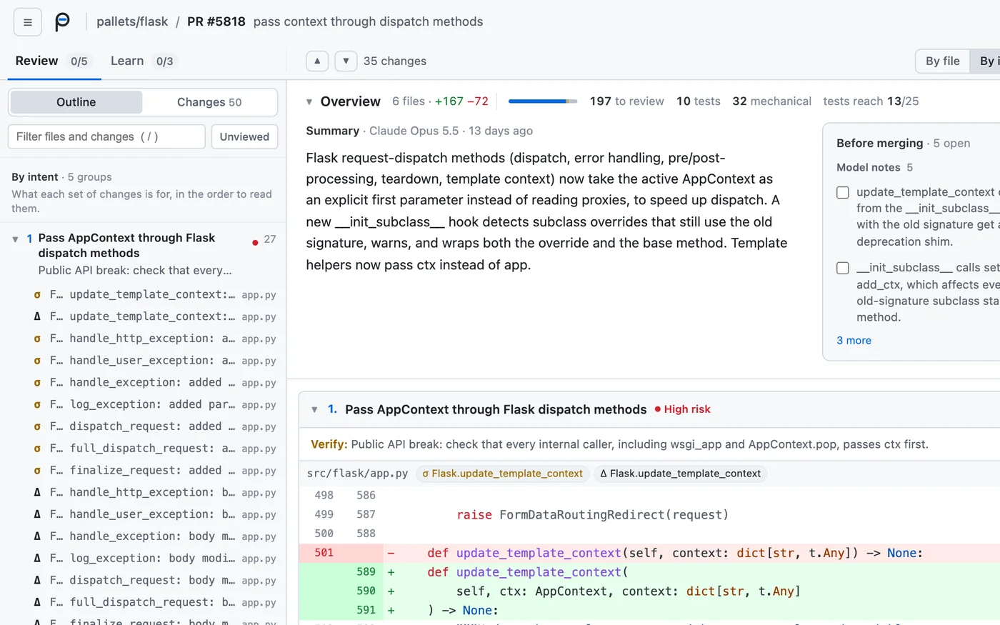
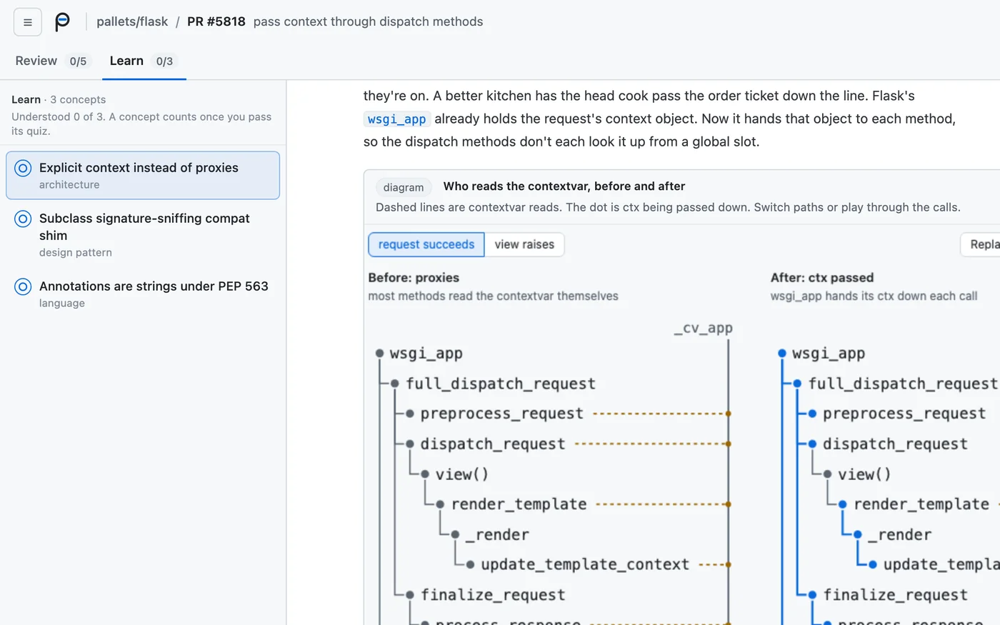

perspica lays out a pull request so you can read it in order: changes grouped by what they do, moves and formatting set aside, and notes on what to check. Learn explains the ideas behind the change.
Every example opens on the review, with Learn one tab over. Both are from pallets/flask#5818.


Popular open source projects, one merged pull request each, with what perspica pointed out.
393 of the 545 changed lines are moves and reformatting. You only need to read 152.
Flags that --ignore-file still uses the process directory, because add_ignore runs before current_dir.
Flags that update_template_context was left out of the compat list.
Flags that Discard on stdin breaks on the JVM.
Tests reach all 20 changed functions.
Tests reach 30 of the 31 changed functions.
cross-spawnFlags that line breaks in arguments now throw on Windows, which the PR doesn't mention.
Flags that the new depth limit also changes sort, group and unique, which the PR doesn't mention.
Flags that the new 500ms startup timeout isn't in the PR title.
Flags that Node.insert no longer returns the node, which can break outside callers.
53 of the 215 changed lines are mechanical and 77 are tests, so 85 are left to read.
Flags that an unexpected question type now throws on the DNS callback thread.